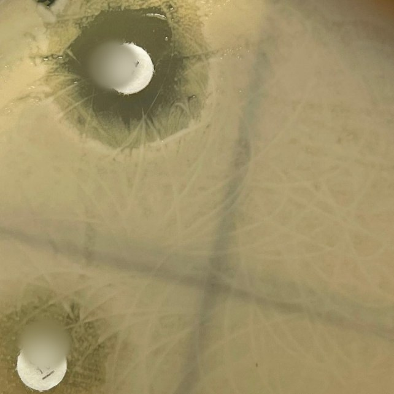
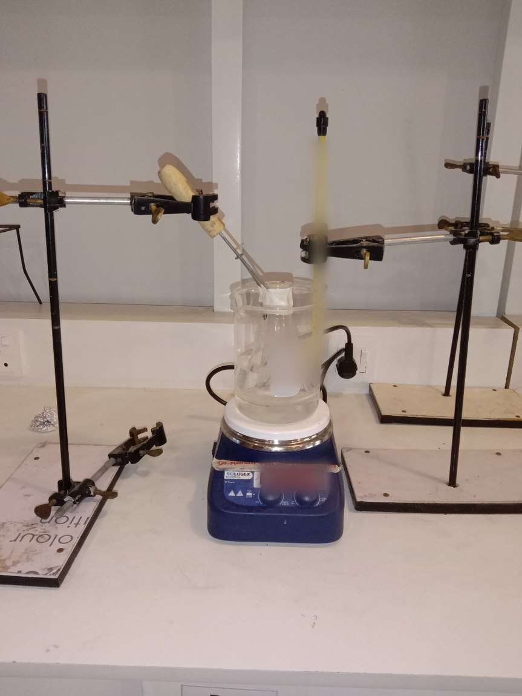
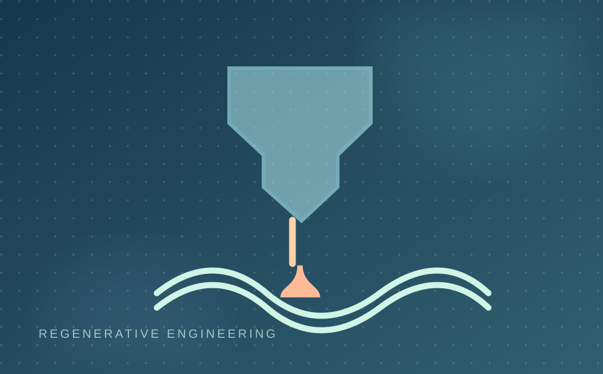

Structure-Based Drug Repurposing in Leishmania tropica
A computational workflow to investigate drug-resistance-associated protein targets and prioritize repurposed compounds.
Read case studyI'm Esha Zaman, a Biotechnology graduate exploring formulation science, computational drug discovery, and regenerative medicine. This is a curated record of the questions I have investigated, the methods I have learned, and the work I hope to pursue next.
Research experiences and academic work that shaped my interest in biomaterials, formulation, drug delivery and tissue-focused biotechnology.
A computational workflow to investigate drug-resistance-associated protein targets and prioritize repurposed compounds.
Read case study
Microbiology & experimental evaluationInvestigating growth and antibiotic-response patterns in commercial probiotic cultures supplemented with fish collagen peptides.
Read case study
Formulation scienceExperimental formulation development and comparative assessment of physical stability for a topical essential oil system.
Read case studyCo-authored conference abstract and contributed to a research poster presented at ICRA-C 2024, NUST.
Read case study
Scientific writingA review of how nanotechnology and bioprinting converge in tissue engineering, organ development and organoid-related applications.
Read case studyProject descriptions distinguish completed work from collaborative writing and research proposals. Unpublished research details are not publicly shared.
View all selected work ↗My training spans experimental formulation, microbiology, and computational methods. Across different projects, I have learned to value careful documentation, comparison of conditions, and transparent interpretation of results.
Explore methods & laboratory practice ↗Define a problem and understand the biological context.
Select relevant assays, models or computational tools.
Separate measured findings, predictions, and proposed work.
Translate methods and observations into reports, figures and presentations.
Writing, teaching and public engagement are part of how I understand the role of research.
Regenerative medicine review, photoaging evidence synthesis and a brain-organoid research proposal.
Explore writing ↗02Curated nanocosmetics and cell-therapy presentations, conference research and an original fungal poster design.
Explore presentations ↗03Millennium Fellowship / Project Pawtection and the Aspire Leaders Program.
Explore impact ↗What comes next
I aim to deepen my research training in biomaterials, controlled drug delivery, tissue engineering and regenerative medicine, with a particular interest in skin health and wound healing.
Research direction ↗